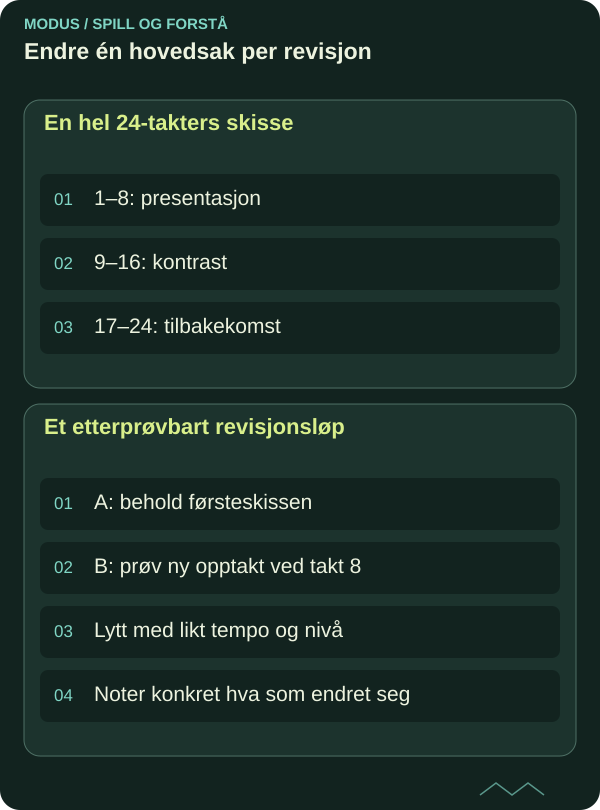

Komposisjon: fra første skisse til en begrunnet revisjon
Et verk blir ferdigere når du kan si hva hver revisjon skal løse. Arbeid med et kort materiale, avgrensede versjoner og et konkret musikalsk spørsmål.
DETTE LÆRER DU
Komposisjon: fra første skisse til en begrunnet revisjon
- Utvikle en skisse til et helt lite verk.
- Dokumentere revisjoner med lyd og taktreferanser.

Begynn med et spørsmål som kan høres
Velg en avgrenset hensikt, for eksempel «et rolig motiv skal bli et drivende riff uten å miste identiteten». Lag et firetoners motiv og to rytmiske versjoner. Ikke start med å fylle hele arrangementsflaten.
Skriv ned tempo, toneutvalg, hovedinstrument og omtrentlig lengde. Dette er arbeidsvalg som kan endres, men de gjør det mulig å vurdere hva en skisse prøver å være. Kunstnerisk hensikt er ikke et løfte om at resultatet allerede virker.

Les diagrammet som tekst
- En hel 24-takters skisse: 1–8: presentasjon; 9–16: kontrast; 17–24: tilbakekomst
- Et etterprøvbart revisjonsløp: A: behold førsteskissen; B: prøv ny opptakt ved takt 8; Lytt med likt tempo og nivå; Noter konkret hva som endret seg
Lag en helhet før du polerer detaljene
Sett sammen 24 takter: åtte presentasjon, åtte kontrast og åtte tilbakekomst. Bruk bare melodi, bass og en enkel harmonisk rytme. Spill gjennom uten stopp og merk hvor retningen blir uklar.
Velg én hovedsak per revisjon. Hvis overgangen til kontrastdelen svikter, prøv først en felles tone eller en rytmisk opptakt. Å endre både toneart, instrumentasjon, melodi og tempo samtidig gjør det vanskelig å høre hvilket grep som løste problemet.
Gitar og piano gir ulike kontroller
Spill melodien på gitar og vurder frasering, pust, anslagsretning og naturlige posisjonsskift. Reduser den samme musikken på piano til bass og melodi. Der blir overflødige harmoniske skift ofte lettere å oppdage.
Ta opp versjon A og B med likt tempo og omtrent likt avspillingsnivå. Noter «takt 8: la til to slags opptakt som varsler ny puls» i stedet for «gjorde overgangen bedre». Den konkrete beskrivelsen gjør revisjonen etterprøvbar, også hvis du senere velger originalen.
Bestem hva ferdig betyr for denne leveransen
En liten komposisjonsleveranse kan være et fullstendig partitur eller en gjennomspilt lydskisse med avtalte roller og tydelig slutt. Uavklarte instrumentstemmer må merkes som skisse, ikke gjemmes bak en pen miks.
Lever motiv, formkart, siste versjon og en kort revisjonsjournal. Skill teknisk kontroll fra kunstnerisk vurdering: korrekt notasjon gjør ikke automatisk formen overbevisende, og en sterk idé opphever ikke en utilsiktet feil i stemmene. Avslutt med ett nytt spørsmål som neste prosjekt kan undersøke.
Kildegrunnlag og faglig status
Original norsk MODUS-tekst med egne undervisningseksempler. Faglig referansegrunnlag for videre kontroll:
Under arbeid – ikke faglig sluttgodkjent. Artikkelen dokumenterer ingen personlig mestring og gir ingen formell studie- eller publiseringsgodkjenning. Skriftlig forklaring, faktisk spill og lytting må vurderes hver for seg.
FRA LESING TIL SPILLING
Prøv det selv.
Fullfør et 24–32-takters originalstykke i to dokumenterte revisjoner. Lever lyd, gitar-/pianoreduksjon og tre konkrete endringsbegrunnelser.
- Gjør et selvstendig første forsøk før du ser quizfasiten.
- Spill den konkrete modellen på gitar og piano, og lytt til forskjellen.
- Lag en ny variant og behold første og bearbeidede versjon separat.
SJEKK FORSTÅELSEN
Hva sitter igjen?
Tre spørsmål om det du har lest. Alle tre riktige gir fullført quiz. Du kan prøve så mange ganger du vil.
Fullføring lagres i denne nettleseren og deles mellom norsk og engelsk.
Du har svart riktig på alle tre spørsmålene. Ta ideen med til instrumentet.
Til artikkelbiblioteket ↗︎ANBEFALT NESTE STEG
Arrangering: gi hvert instrument en tydelig oppgave
Neste del av den foreslåtte faglige ruten. Velg emner ut fra forkunnskap og behov.
Arrangering: gi hvert instrument en tydelig oppgave ↗︎